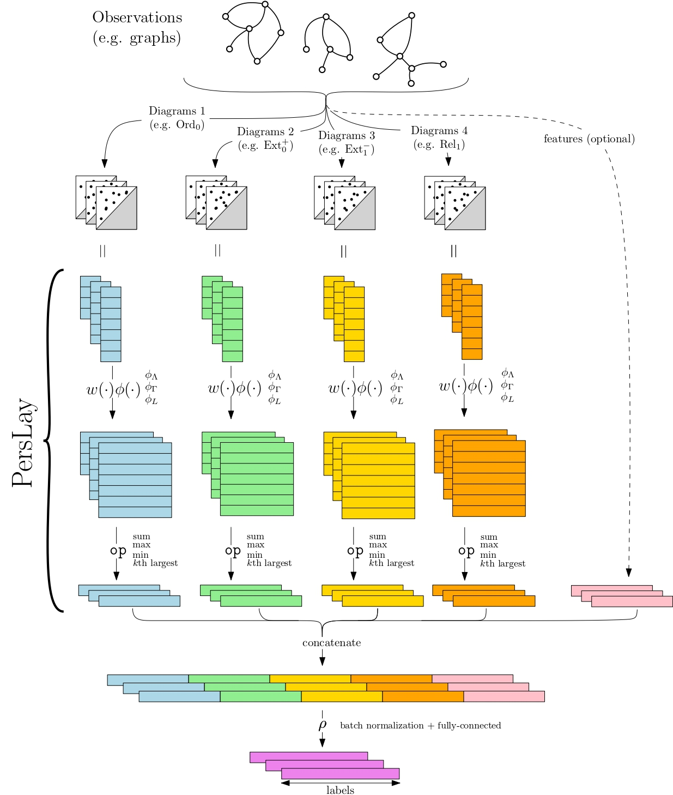

|
I am in the editorial board of the Gudhi library, which is a C++/Python-based general library for topological data analysis that contains various algorithms for simplicial complex and persistence diagram computation and representation. I developed the cover complex package and the persistence representations module. Programming language: C++, Python |

|
perslocsig: package for computing local signatures on 3D shapes based on persistent homology. Programming language: C++, Python |
|  |
perslay, difftda, RipsNet: TensorFlow models for computing and processing persistence diagrams. Programming language: Python |

|
mrec: package for fast computation of optimal transport using recursive approximations. Programming language: Python |

|
multipers: package for computing multiparameter persistence descriptors. Programming language: Python |